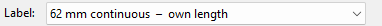
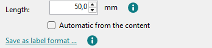
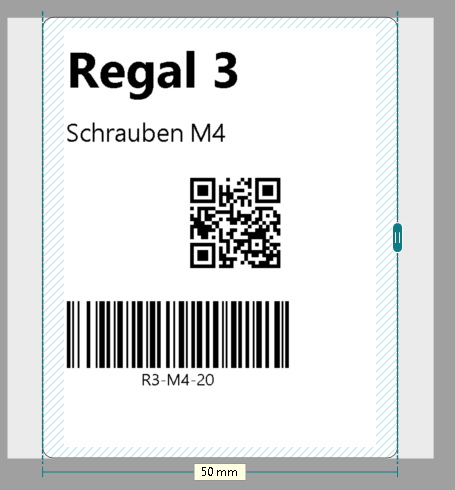
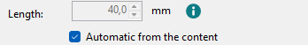
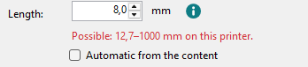

Label formats and custom lengths
On continuous tape you set the label's length yourself: in the Length field or with the grip at the label's end. You don't need a label format for it.
-
Choose the label
The Label list at the top shows your label formats first, then Brother's papers for the printer's model. For a length of your own, choose a continuous tape, for example "62 mm continuous" (e.g. DK-22205, in the US DK-2205).

As soon as you set a length, it says "own length" there.
-
Type the length
Click an empty spot next to the label so that nothing is selected. On the right, under Label, you then see the Length field. Type the length in millimetres.

It prints exactly this length. The (i) next to the field says what the printer can do: 12.7 to 1000 mm on the QL-800 and the other models with a narrow print head, 25.4 to 3000 mm on the wide models (QL-1050 to QL-1115NWB).
-
Drag the end
There is a grip at the end of the label. Drag it to make the label longer or shorter; the measure under the label shows the length.

-
Automatic from the content
With Automatic from the content ticked, the end follows the last object, with the same margin as at the start. The field turns grey and the measure says "automatic". Move an object further along and the label grows with it.

For a fixed length, untick it again.
-
Too short or too long
QL Label Maker doesn't accept a length the printer can't print. A red line under the field says what this printer can do.

-
Save as label format
Only needed if you want to choose the length in other programs too, for example in Word. The link Save as label format … opens QL Label Formats with a new format of this length. Click Save & apply there as usual (Windows asks for administrator permission).
You manage your label formats in QL Label Formats, also through Tools > QL Label Formats.